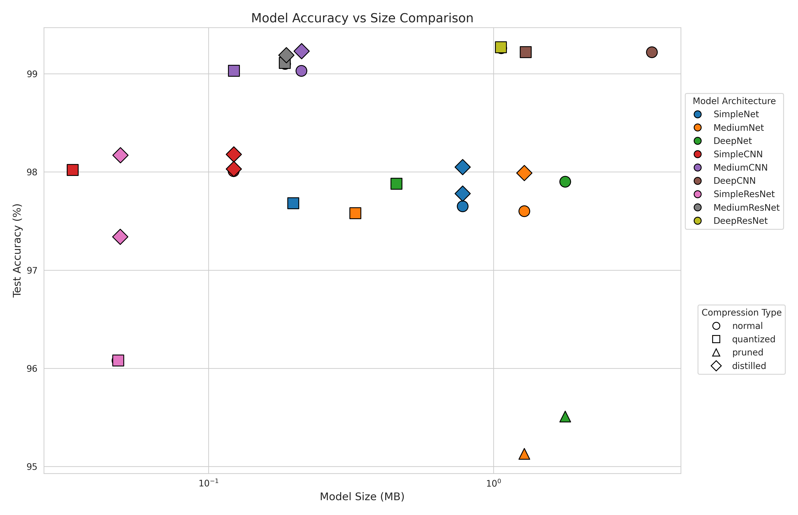
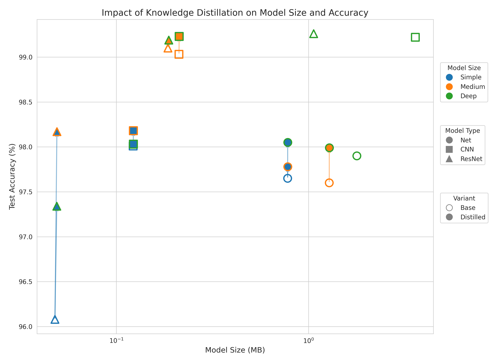
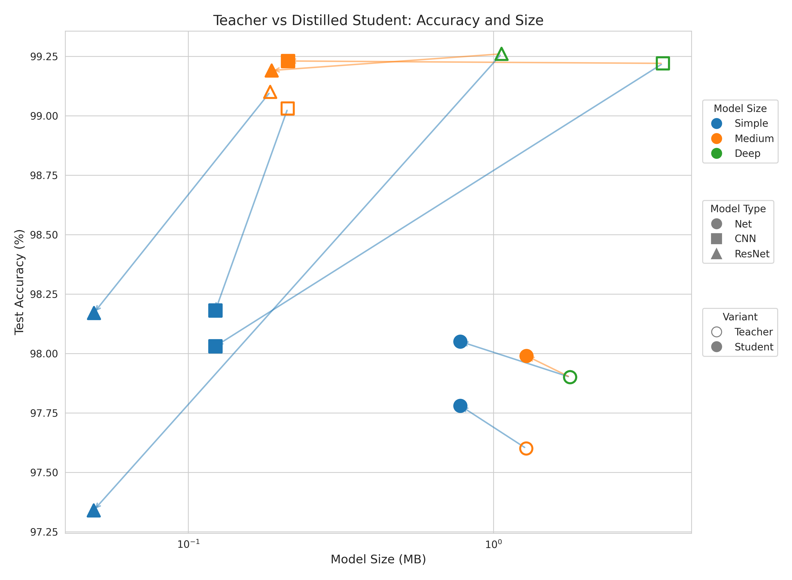

When is knowledge distillation worth it?
Knowledge Distillation is a technique designed to transfer the "knowledge" or learned generalization capabilities from a large, complex, but potentially slow and resource-intensive "teacher" model (such as an ensemble or a heavily regularized network) to a smaller, faster "student" model suitable for deployment. The foundational idea, explored by Bucila et al. (2006) [1], involved training the student model to mimic the input-output function of the teacher by using the teacher to label a large set of unlabeled or synthetically generated "pseudo-data." Hinton et al. [2] refined and popularized this concept for deep learning by proposing the use of the teacher's full output probability distribution (the "soft targets") rather than just the final prediction. These soft targets, often further softened using a "temperature" parameter, contain richer information about the similarities the teacher model has learned between classes (termed "dark knowledge"). By training the student to match these soft targets (often in combination with the original hard labels), the goal is to enable the compact student model to learn to generalize in a similar, effective way as the cumbersome teacher ([2]), thus bridging the gap between model performance and deployment practicality.
The experiment systematically investigates and compares the effectiveness of different neural network architectures and specific model compression techniques on the MNIST handwritten digit classification task. Initially, it establishes performance benchmarks by defining and training baseline models of varying complexity – Multi-Layer Perceptrons (MLPs), Convolutional Neural Networks (CNNs), and Residual Networks (ResNets), each with 'Simple', 'Medium', and 'Deep' variants. This provides baseline accuracy and model size metrics for each architecture.
The experiment then focuses on applying and evaluating two common model compression methods: dynamic quantization (reducing the precision of model weights) and knowledge distillation (training smaller 'student' models using guidance from larger, pre-trained 'teacher' models). Each baseline model is subjected to these techniques, and the resulting compressed models are evaluated for their final accuracy and size. The experiment carefully tracks metrics and utilizes visualizations to compare the trade-offs between model accuracy and size across the different architectures and the applied compression strategies, aiming to demonstrate how quantization and distillation can create smaller, more efficient models while potentially preserving performance.
This is the glass half full perspective of knowledge distillation. We can think of it as strictly improving our models using the knowledge of more complex models.
This is the glass half full perspective of knowledge distillation. We can think of it as strictly improving our models using the knowledge of more complex models.
But we can also think of it as accepting a downgrade in performance from the larger models.
We also compared the impact of other compression techniques with the same framework. Pruning led to a huge drop in accuracy. Quantization on the other hand had no drop in accuracy and reduced the size of the models to 25% of the original.
Unlike quantization, which is restricted to a 25% reduction in size, based on the architecture of the student model, we can compress our models by an orders of magnitude. Moreover, the idea unlocks many new ways to learn like self-distillation, cross-modal, data-free, multi-teacher, automated, adversarial and many more forms of knowledge distillation.
[1] Buciluǎ, Cristian, Rich Caruana, and Alexandru Niculescu-Mizil. Model compression. Proceedings of the 12th ACM SIGKDD international conference on Knowledge discovery and data mining (2006).
[2] Hinton, Geoffrey, Oriol Vinyals, and Jeff Dean. Distilling the knowledge in a neural network. arXiv preprint arXiv:1503.02531 (2015).
[3] Romero, Adriana, Nicolas Ballas, Samira Ebrahimi Kahou, Antoine Chassang, Carlo Gatta, and Yoshua Bengio. Fitnets: Hints for thin deep nets. arXiv preprint arXiv:1412.6550 (2014).
[4] Stanton, Samuel, Marc-Alexandre Carbonneau, Florian Golemo, and Yoshua Bengio. Does knowledge distillation really work?. Advances in neural information processing systems 34 (2021): 6906-6919.